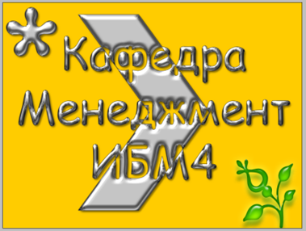

Цель работы: овладеть навыками создания и изменения изображений, графических
объектов, элементов, документов в среде Adobe Photoshop, выделять, рисовать,
редактировать, перемещать и просматривать изображения, вводить текст, брать
образцы, копировать и встраивать графические объекты, самостоятельно создавать
многослойные изображения, сохранять их и создавать аннотации. и т.п.

2.1. Изображение многослойного баннера
из ТЕМЫ 1